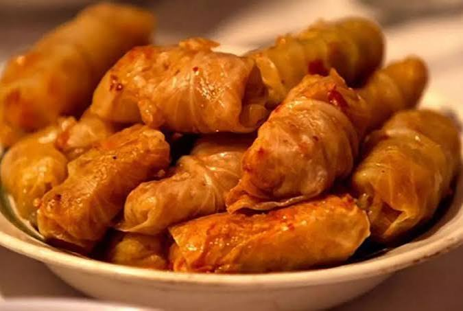

The tradition, the love and the soul are all mixed together alongside the best ingredients to make the on of the most iconic dishes romania has to offer.
Alright everybody, we’re making sarmale. Romanian food. Little cabbage meat rolls. Very good. Very dangerous if you eat 47.
You need:
Chop your onion. Put some oil in a pan. Cook the onion until it's soft. That's it. We are not making molecular gastronomy.
Mix together: Meat + rice + onion + salt + pepper + paprika. Congratulations. You have created the meat situation.
Take one cabbage leaf. Put a spoonful of filling in it. Fold the sides in. Roll it up. Like this: cabbage → meat → fold → roll → BOOM. Don't make them enormous. They're supposed to be little guys.
Put some chopped cabbage on the bottom of a big pot. Then put your sarmale in. Stack them up. Add some tomato sauce and water so they're mostly covered.
Put the lid on. Cook them slowly for around 2–3 hours. Low heat. Do not start blasting the stove like you're headlining the main stage.
Put sarmale on plate. Add sour cream. Maybe some mămăligă. Take one bite. Look at your friends. Say: "BRO. ROMANIA." And that's sarmale.